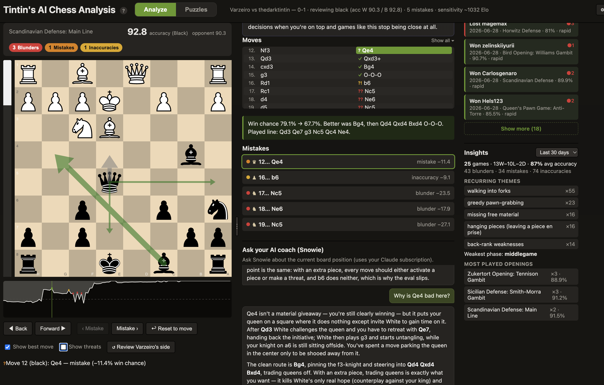
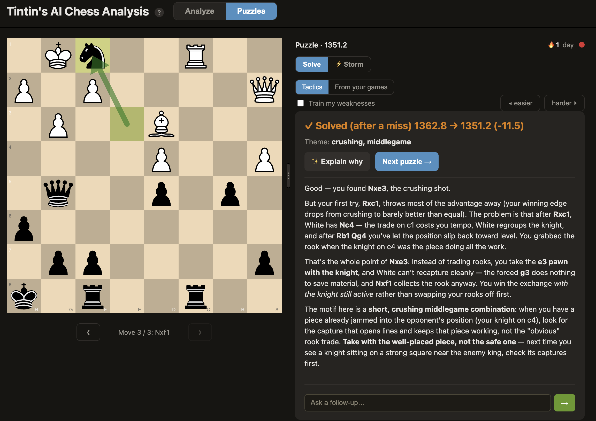
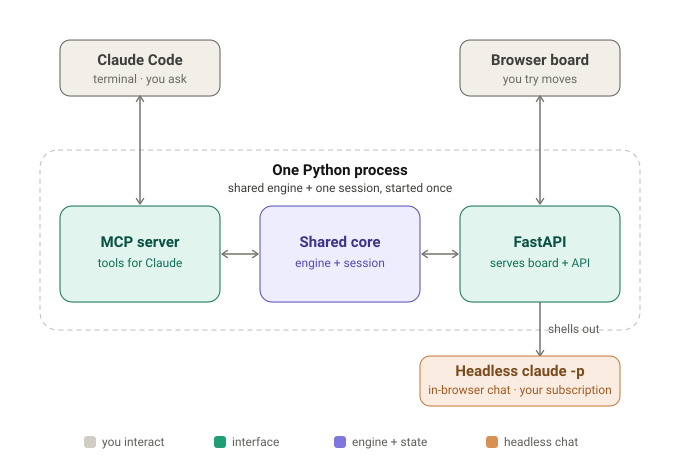

Ask why a move was a mistake, or what you should have played instead, and get a straight answer in plain words. Snowie, your AI coach, is built on a full Stockfish review of your game, so every explanation is grounded in the real lines the engine saw rather than guessed. Then sharpen up in the built-in puzzle trainer, where the same coach teaches the pattern behind every solution.
Runs locally on your machine, and the AI coach uses your existing Claude subscription. No API keys, no per-token bills. Prefer fully offline? Point the coach at a local model (Ollama, LM Studio, …) with no Claude account at all.

A raw engine spits out a number and a best move. That's great if you already understand the position, and useless if you don't. Snowie, the built-in AI coach, turns that number into a sentence.
Best move: c3. …and you're left to figure out the rest yourself.
“Nf3 was a blunder. Your win chance fell from 81% to 57%. The crushing reply was c3!, kicking the knight with nowhere safe to go. Instead, Nf3 invited …Nxf3+ and handed back the whole advantage.”
Everything is built from one Stockfish sweep of your game: no guessing, no estimates.
Every inaccuracy, mistake, and blunder gets a concrete comment: the better move, its line, and how your move gets punished.
Replay each mistake, drag a piece to try your own idea, and free-explore any variation with instant engine feedback. Works on your phone too: scan a QR code to open it over your Wi-Fi.
A Lichess-style win graph across the whole game, oriented to the side you played. Click or arrow-key to scrub.
See the move you played, the engine's best moves (live multi-PV), and the refutation of any move you try.
Ask Snowie “why is this bad?” or “what should I do here?” and it answers from pre-computed engine facts, so it stays grounded.
Every game is saved locally and tagged for recurring weaknesses (hung pieces, missed forks, time trouble) that build into your profile.
Most puzzle trainers just mark you right or wrong. This one gives you a real rating that moves as you solve, and explains the idea behind every solution, the same way it explains your games.

Puzzles from the CC0 Lichess database, with a real rating that moves on every solve or miss, plus a "train my weaknesses" filter tuned to your profile.
Press "Explain why" and the coach names the motif and walks the line. Miss it, and it first shows why your move failed, then teaches the win.
A "From your games" source turns positions you actually botched into engine-checked practice puzzles, with a link back to the full game.
Pull your games straight from Lichess or Chess.com by username, or paste any PGN from anywhere, then walk through them move by move. Set your Chess.com username once and new games sync in automatically.
One process holds one Stockfish engine and one analysis. A Claude Code terminal (via MCP) and an interactive browser board both read from it, so they never disagree.

Works with games from anywhere — Lichess, Chess.com, or any PGN. It runs locally and sets itself up: no Python, no Homebrew, nothing to install first — it fetches Stockfish and the rest on first launch.
Download Tintin's AI Chess Analysis.app (from Releases), drag it into Applications, and open it (first time, unsigned: double-click, then System Settings → Privacy & Security → Open Anyway). It installs everything itself — no Homebrew or Python needed — then opens the board; paste any PGN, or enter a Lichess or Chess.com username to load your recent games.
Double-click Tintin's AI Chess Analysis.bat (Windows) or Tintin's AI Chess Analysis.command (Linux). The first launch installs everything, then opens the board — paste any PGN, or load your recent Lichess or Chess.com games.
Run ./install.sh (or install.ps1 on Windows) and reload Claude
Code. Paste a PGN, say “analyze this game,” and Claude narrates your mistakes and hands
you the board link.
Full setup, configuration, and options are in the README on GitHub.
claude CLI, and how is it different from the Claude app?
The claude CLI (Claude Code) is a separate program that runs in your computer's
terminal. It is not the Claude desktop app or the claude.ai website, but it
signs in with the same Claude subscription, so there is no extra account, no
API key, and no per-token bill. This app uses the CLI behind the scenes to write the
plain-English coaching, which is why you need it installed and logged in.
Open a terminal and install Claude Code with one of these (the native install is recommended):
# macOS / Linux / WSL
curl -fsSL https://claude.ai/install.sh | bash
# Windows (PowerShell)
irm https://claude.ai/install.ps1 | iex
Or use a package manager: brew install --cask claude-code (macOS) or
winget install Anthropic.ClaudeCode (Windows).
Then run claude once and follow the prompt to log in with your Claude
subscription. After that, restart this app and the AI coach will work. Full details are in
the Claude Code docs.
Note: the engine review itself (the mistake list, eval bar, win graph, and arrows) works without the CLI. You only need it for the conversational coaching and the AI summaries.
Yes. The AI chat and coach summaries can run on a model on your own machine,
with no Claude subscription, no login, and not even the claude CLI.
The app talks to your local model directly. It works with any local server that exposes an
OpenAI-compatible API: Ollama, LM Studio, llama.cpp, a
LiteLLM proxy, and others.
With Ollama (easiest):
# install Ollama, then pull any chat model
ollama pull qwen2.5-coderIn the board, open ⚙ Settings → Advanced → Local AI model, click Detect Ollama, pick a model, and Save. That's it.
With anything else: under the same setting, fill in the server's
URL (for example http://localhost:1234/v1 for LM Studio) and
the Model name. Leave the field blank to switch back to Claude.
Note: quality depends on the local model, so small models explain less well than Claude. The Stockfish engine review is always fully local either way.
Yes. The app keeps running on your computer, and your phone opens the same board over your Wi-Fi, with a layout made for small screens: a full-width board, a bottom toolbar, and a badge on each move showing at a glance whether it was a blunder or the best move.
In the board on your computer, click 📱 Phone at the top, press Turn on, and restart the app.
Click 📱 Phone again and scan the QR code with your phone's camera (or type the address it shows). Your phone has to be on the same Wi-Fi as the computer.
Not connecting? Open Problems connecting? in the same panel. The usual causes are a guest Wi-Fi network, a firewall prompt that needs Allow, or a VPN.
Note: keep the computer on and the app running while you use your phone. Only turn this on at home or on another network you trust, since anyone on that network could open the board.